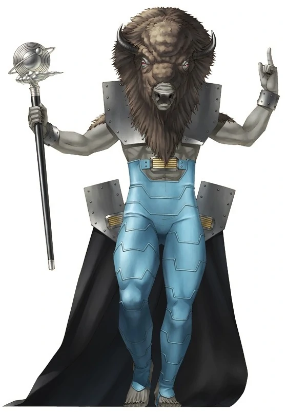

Morax

Description
Morax (Lvl 10) is the boss of Sector Antila, the first sector,
and the first major boss in the game. Even though this
is an Atlus game, as long as you do some basic
prep and exploit his weakness to ice, you'll butcher
this overgrown cow.
Tips to Prepare
- In terms of equipment, I'd recommend getting the
forma needed to craft the Andersen; it's random targetting
won't matter as much since there's only a single target.
But more importantly, it has Ice Shot, which gives the main
character a way to do extra damage to Morax and trigger
Co-Op attacks, makign the fight go faster.
-
Also make the Ancient Vest; it may give weakness to Gun,
but the resistance to fire is more important; going in with
the starting vest means you're weak to Fire and thus at greater risk
of death, followed by Game Over.
-
Similarly, for your party get/fuse demons that can attack with ice
while also being resistant to fire. I fused a Pele and then used
D-Sources to give her Bufu. Also have a demon with some debuff
like Tarunda or Rakunda, will make the fight smoother. Also if you
can, get a demon that has the same alignment and Ice attacks for
more Co-Op attack goodness.
-
Finally, make sure you craft some Patra and Me Patra Stones if you can.
The Fight
Morax resists Gun, reflects Fire, and is weak to Ice. He's got
some good physical and magic attacks, and a good strength
and magic stat, but with the right prep it's nothing too worrisome:
-
Maragi: Light fire attack that hits the entire party.
It's his most used attack; hence the need for Fire resistance.
-
Gehenna: Tries to inflict Fear on each member of the party.
Fear is annoying because demons may unsummon themselves; use Patra Stones
and Me Patra stones and you'll be good.
-
Lunge: Light physical attack. Nothing special.
-
Horned Rampage: 2 hits of light physical attacks
on random targets, each hit has a chance to inflict Fear. He'll start
using this move when low on health; but it's not that big of a deal;
heal if you need, patra stones if anyone has fear, etc.
Overall, keep hitting him with Ice attacks, heal if need be,
and get a few debuffs on him to make the fight go faster. Nothing much to
it.